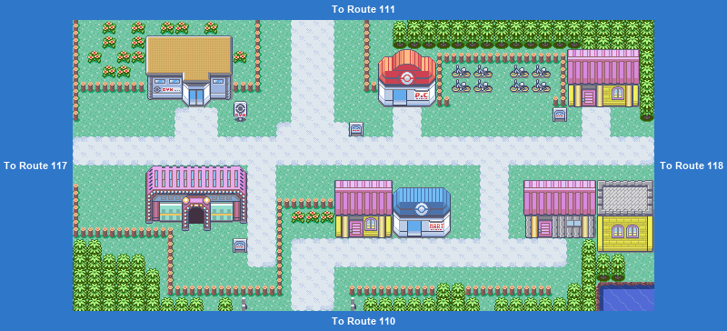
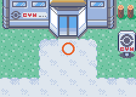
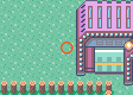

PokémonEMMA'S EMERALD
OFFICIAL Strategy Guide
Mauville City
TIP
No wild Pokémon in the grass here. Time of day: M = morning (6–10), D = day (10–19), E = evening (19–20), N = night (20–6).
Event 1: Wally

Wally and his uncle stop you outside the gym. Wally wants a battle to prove he is ready: his Ralts, one Pokémon. Win and the gym opens.

Event 2: Bike shop and Mart

Rydel gives you a free Bike (Mach or Acro; swap any time). The Mauville Mart sells the six vitamins, the six Power items and the EV-reducing berries from here on.
Trainers
| ARival WALLY: Luvdisc LV16Water; Ralts LV16PsychicRalts_Family_Type2 |
78